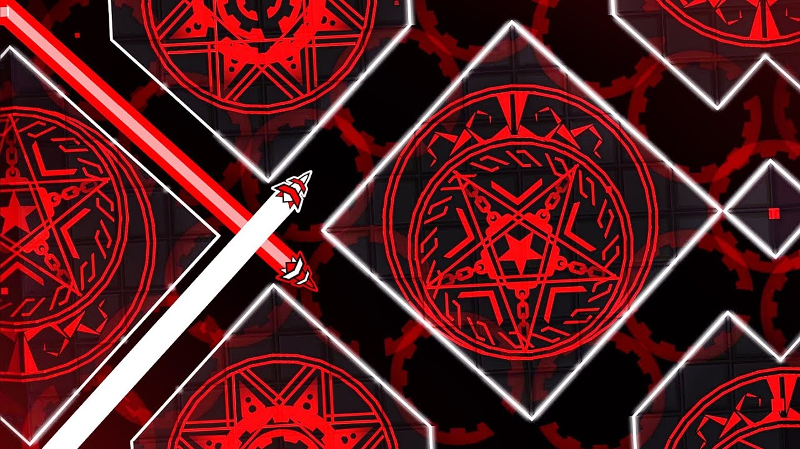
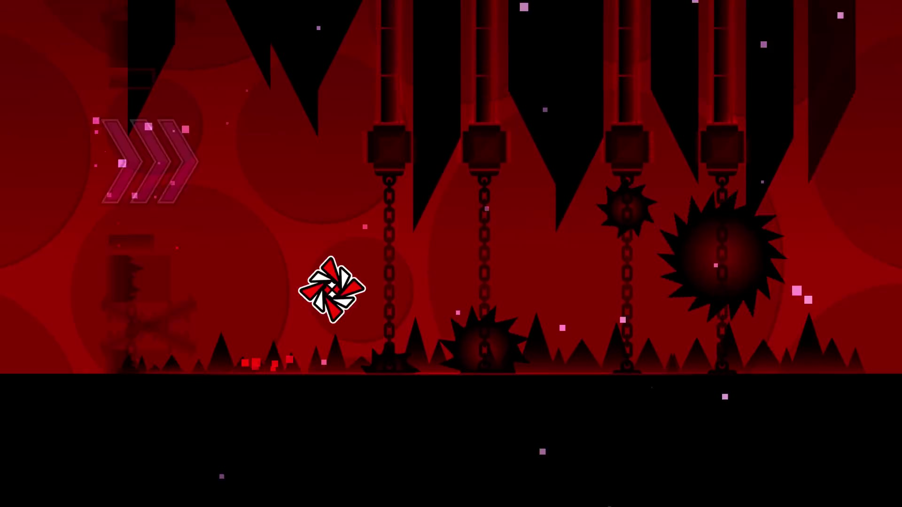

DEATH MOON

vidéo du niveau |
"Death Moon is a 1.9/2.0/2.1 Easy Demon created, published and verified by Caustic, the emergency user account of FunnyGame. It is one of the most acclaimed levels in Geometry Dash and often appears on lists of the greatest levels ever made,[1][2][3] receiving praise for its intricate art, music, gameplay and innovative effects, and is the eighth most-liked Demon in the game. A spiritual successor, Reanimation, was created by Terron and released in 2.0." |

